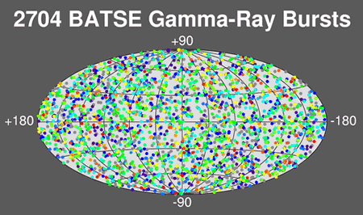

Gamma Ray Bursts (GRBs) are the most violent explosions in the Universe, with some releasing more energy in 10 seconds than what the Sun will emit in its entire 10 billion year lifetime! First discovered in the late 1960s by military satellites, little progress was made in understanding these energetic events until 25 years later when the Compton Gamma Ray Observatory with the Burst and Transient Source Experiment (BATSE) was launched. Roughly one GRB per day was detected by this space observatory, and initial results showed that these objects were distributed homogeneously on the sky. They also seemed to come in two different types; the more common long bursts lasting more than 2 seconds, and short bursts with durations of less than 2 seconds. That the burst of gamma rays can last such a short period of time indicates that whatever the origin, it must be contained within a very small region, as objects cannot vary faster than the time it takes for electromagnetic radiation to travel across them.

Credit: NASA/Marshall Space Flight Center/Space Sciences Laboratory
GRB research has progressed enormously since the late 1990s due mostly to the establishment of a rapid response network of satellites and ground-based observatories which observe each burst soon after detection. Such observations have revealed that GRBs are located in the distant Universe, are accompanied by afterglows at less energetic wavelengths, and that at least some are associated with very energetic supernova explosions called hypernovae. Observations have also verified that GRBs should be classified according to their burst duration, and suggested that long and short bursts may arise from two different progenitors. In current models, long bursts are produced through the core-collapse of a massive star to a black hole, and short bursts are thought to occur when two neutron stars merge to form a black hole.
Whatever the progenitor system, if we assume the energy is emitted equally in all directions, vast amounts of energy (substantially more than what is produced in a supernova explosion) must be generated in a very short time. Theorists were hard pressed to come up with such a mechanism and have instead suggested that the energy of the explosion is beamed into a narrow cone of emission. This reduces the energy production requirements to more physically achievable levels (roughly the level of an energetic supernova), but also means that there are many more GRBs than what we observe – we only see the ones that are aimed in our direction. The estimated number of GRBs per day therefore depends heavily on how narrow the beam of emission is thought to be. Astronomers estimate that the opening angle of the beam is only a few degrees, meaning that although we observe about 1 GRB per day, the actual number of GRBs is more like 500 per day!